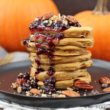

panqueques de zapallo
Ingredientes
- 1/2 taza de puré de zapallo (cocido)
- 1 taza de leche (yo usé de almendras)
- 1/3 taza de maple syrup (puede reemplazar con el endulzante que guste.
- 3 cucharadas de aceite
- 1 cucharada de esencia de vainilla • 2 tazas de harina (use la que guste)
- 1 cucharadita de polvos de hornear • 1/2 cucharadita de bicarbonato de sodio
- 1 cucharadita de canela en polvo
- Una pizca de jengibre • Una pizca de clavo de olor
- 1/4 cucharadita de sal
Preparacion
- En un bowl mezclar el puré de zapallo, leche, maple syrup, aceite y esencia de vainilla.
- En otro bowl mezcle los ingredientes secos, harina, polvos de hornear, bicarbonato, canela, jengibre, clavo de olor y sal.o
- Luego con cuidado va incorporando los ingredientes secos al otro bowl
- Unir todo muy bien. Calentar un sartén antiadherente con aceite en spray o esparcir unas gotas de aceite. Ir colocando de 1/4 de taza de la mezcla. Formar los panqueques y cocinar hasta que salgan unas burbujas y ahí los da vuelta y los cocina 1 minuto más. Siempre a fuego medio.
- Servir con nueces , almendras o lo que tenga. Puede ser con mermelada de arándanos u otra, también puede ser con syrup.